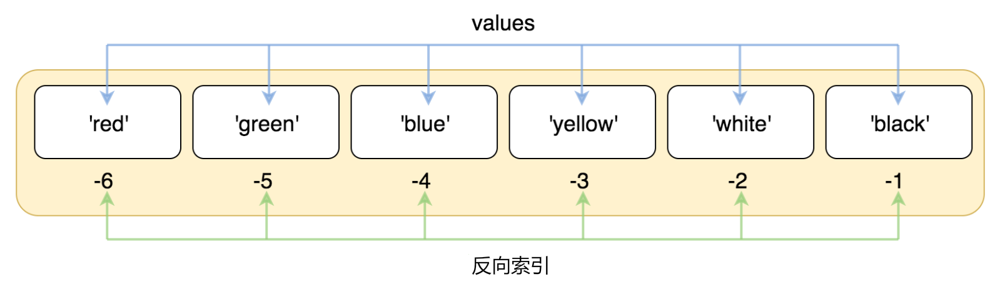
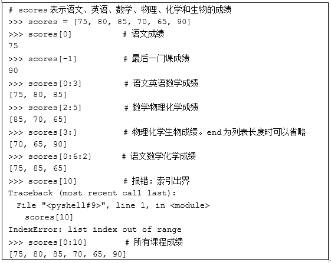
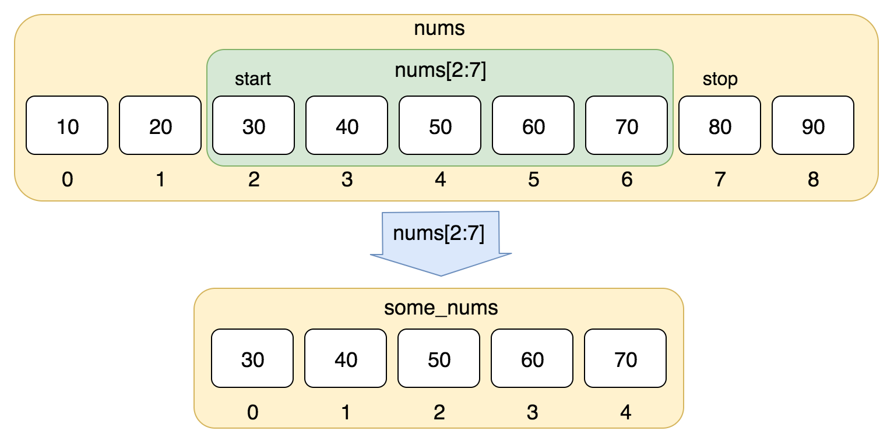
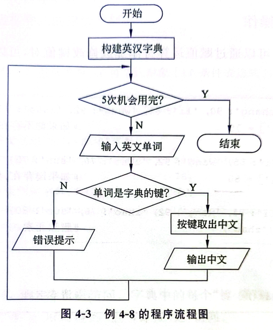

列表
a[i]/a[1:4]取值a.append(x)末尾加一个a.extend(L)批量加进去a.remove(x)/a.pop()删a.sort(reverse=True)降序sorted(a)不改原列表[x*2 for x in a if x>0]推导式
列表 · 元组 · 字典 · 集合 · 字符串 · 序列解包 · 综合应用（本章 8 个知识模块 + 40 余段可运行演示）
Lesson Overview · 从"一个变量放一个数"到"一个变量放一组数"
前面三章，一个变量只能装一个数据。可现实里的数据都是成组出现的——一个班 40 个成绩、一张表的 5 列字段、一段话的几十个词。组合数据结构就是给程序配上的"容器"：这一章学四件容器（列表、元组、字典、集合）加一个老熟人（字符串），它们决定了你后面能不能顺畅地处理数据。
点击节点可跳转到对应讲解位置，点击三角可展开 / 收起分支。
4.1 · 组合数据类型全景 · 序列 / 映射 / 集合 · 可变与不可变
基本数据类型（整数、浮点数、字符串）一次只能装一个数据——存"一个学生的一次成绩"够了，但要存"一个班 40 个人的成绩"就抓瞎了：难道写 40 个变量？
组合数据类型（Compound Data Types）就是为这件事准备的：用一个变量管理一组相互关联的数据。它们把多个元素组织在一起，支持快速查询、修改和批量操作，是后面 NumPy、Pandas 处理数据的底层形态。
| 容器 | 定界符 | 是否有序 | 能否改 | 能否索引 | 元素能否重复 | 典型用途 |
|---|---|---|---|---|---|---|
| 列表 list | [ ] | 有序 | 可变 | 能 | 能重复 | 一组成绩、一批数据 |
| 元组 tuple | ( ) | 有序 | 不可变 | 能 | 能重复 | 固定的几个值、函数返回多个值 |
| 字符串 str | ' ' " " | 有序 | 不可变 | 能 | 能重复 | 文本处理 |
| 字典 dict | {键: 值} | 无序 | 可变 | 不能（按键） | 键不重复、值可重复 | 查表、统计、配置 |
| 集合 set | { } | 无序 | 可变 | 不能 | 不能重复 | 去重、集合运算 |
scores = [75, 80, 85] # 列表：方括号
point = (3, 5) # 元组：圆括号
student = {'name': 'zhang', 'age': 20} # 字典：键值对
courses = {'math', 'en', 'pe'} # 集合：大括号
text = 'Python' # 字符串：引号
print(type(scores), type(point))
print(type(student), type(courses), type(text))
<class 'list'> <class 'tuple'> <class 'dict'> <class 'set'> <class 'str'>
"可变"是说创建之后还能不能改内容。列表、字典、集合是可变的；元组和字符串是不可变的。这一条差别在后面的字典和集合里会反复出现——字典的键、集合的元素都必须用不可变类型。
scores = [75, 80, 85]
scores[0] = 90 # 列表：可以改
print("列表改后：", scores)
point = (3, 5)
print("元组改前：", point)
point[0] = 9 # 元组：不能改 → 报错
列表改后： [90, 80, 85]
元组改前： (3, 5)
Traceback (most recent call last):
File "<pyshell>", line 7, in <module>
point[0] = 9 # 元组：不能改 → 报错
TypeError: 'tuple' object does not support item assignment
4.2 · 创建与访问 · 索引与切片 · 常用操作 · 列表推导式
列表是有序、可变的序列，用方括号 [ ] 作定界符，元素之间用英文逗号分隔：[元素1, 元素2, …]。同一列表里的元素类型可以不同，列表里还能再放列表（嵌套列表），一对空方括号就是空列表。
scores = [75, 80, 85] # 数字
names = ['zhang', 'wang', 'li'] # 字符串
mixed = ['Class', 1, 'Python', 80.2] # 类型可以不同
nested = [['zhang', 75], ['wang', 80]] # 嵌套列表
empty = [] # 空列表
print(scores)
print(names)
print(mixed)
print(nested)
print("空列表：", empty, "长度是", len(empty))
[75, 80, 85] ['zhang', 'wang', 'li'] ['Class', 1, 'Python', 80.2] [['zhang', 75], ['wang', 80]] 空列表： [] 长度是 0
print(list(range(0, 5))) # range 对象 → 列表
print(list('Python')) # 字符串 → 逐字符拆成列表
print(list((1, 2, 3))) # 元组 → 列表
students = ['zhang', 'wang', 'li']
scores = [75, 80, 85]
std_sc = [students, scores] # 列表里放列表：一个变量装下两张表
print(std_sc)
print(type(std_sc))
[0, 1, 2, 3, 4] ['P', 'y', 't', 'h', 'o', 'n'] [1, 2, 3] [['zhang', 'wang', 'li'], [75, 80, 85]] <class 'list'>
格式：列表对象名[索引]。列表可以双向索引：正整数下标从 0 开始（0 表示第 1 个元素），负整数从 -1 开始（-1 表示最后一个元素）。


-1 是最后一个元素，往前依次 -2、-3……（课件图）scores = [75, 80, 85, 70, 65, 90] # 语文、英语、数学、物理、化学、生物
print("第 1 个（语文）：", scores[0])
print("第 3 个（数学）：", scores[2])
print("最后一个（生物）：", scores[-1])
print("倒数第 2 个（化学）：", scores[-2])
print("共", len(scores), "门课")
第 1 个（语文）： 75 第 3 个（数学）： 85 最后一个（生物）： 90 倒数第 2 个（化学）： 65 共 6 门课

scores = [75, 80, 85, 70, 65, 90]
print("列表长度：", len(scores))
print(scores[10]) # 只有 6 个元素，合法下标是 0~5 和 -1~-6
列表长度： 6
Traceback (most recent call last):
File "<pyshell>", line 3, in <module>
print(scores[10]) # 只有 6 个元素，合法下标是 0~5 和 -1~-6
IndexError: list index out of range
语法：列表对象名[start : stop : step]。子列表从 start 开始，以 step 为步长取元素，直到 stop-1 位置为止（不含 stop）。start 默认为 0，stop 默认为列表长度，step 默认为 1。切片下标出界不会报错，只会少取几个。

nums[2:7] 取的是下标 2、3、4、5、6 这 5 个元素（课件图）nums = [10, 20, 30, 40, 50, 60, 70, 80, 90] print(nums[2:7]) # 下标 2 到 6，共 5 个 print(nums[0:4]) print(nums[:3]) # start 省略 = 从 0 开始 print(nums[5:]) # stop 省略 = 一直取到结尾 print(nums[:]) # 全部（等于复制一份）
[30, 40, 50, 60, 70] [10, 20, 30, 40] [10, 20, 30] [60, 70, 80, 90] [10, 20, 30, 40, 50, 60, 70, 80, 90]
nums = [10, 20, 30, 40, 50, 60, 70, 80, 90] print(nums[0:6:2]) # 从 0 开始，每 2 个取一个 print(nums[::2]) # 整个列表隔一个取一个 print(nums[::-1]) # 步长为负：倒序 print(nums[-3:-1]) # 负索引也能切片 print(nums[100:200]) # 越界：不报错，返回空列表
[10, 30, 50] [10, 30, 50, 70, 90] [90, 80, 70, 60, 50, 40, 30, 20, 10] [70, 80] []
IndexError；切片写 [start:stop:step]，含头不含尾，三个参数都可省略，越界不会报错。常用套路：nums[::-1] 倒序、nums[::2] 隔一个取一个。| 运算符 | 功能 | 例子 |
|---|---|---|
= | 赋值运算 | scores = [75, 80] |
+ | 合并两个列表，得到新列表 | [1,2,3] + [4,5] → [1,2,3,4,5] |
* | 重复列表元素 | ['a','b'] * 2 → ['a','b','a','b'] |
in | 成员测试，判断元素是否在列表中 | 90 in scores → True |
print([1, 2, 3] + [4, 5]) # 合并得到新列表
print(['a', 'b', 'c'] * 2) # 重复
scores = [75, 80, 85, 70, 65, 90]
print(90 in scores) # 90 在列表里吗？
print('zhao' in ['zhang', 'wang']) # 字符串也能用 in
print(60 not in scores)
[1, 2, 3, 4, 5] ['a', 'b', 'c', 'a', 'b', 'c'] True False True
+ 合并、* 重复、in 判断"在不在"。注意 + 是生成一个新列表，原来的两个列表不变——这一点和后面要讲的 extend() 正好相反。scores = [75, 80, 85, 70, 65, 90]
scores[3] = 77 # ① 按下标改一个
print(scores)
scores[:3] = [70, 72, 74] # ② 用切片改一段（个数可以不一样）
print(scores)
del scores[0] # ③ 按下标删一个
print(scores)
print("现在还剩", len(scores), "个元素")
[75, 80, 85, 77, 65, 90] [70, 72, 74, 77, 65, 90] [72, 74, 77, 65, 90] 现在还剩 5 个元素
scores[3] = 77 改一个，scores[:3] = [...] 改一段（长度都不要求一样），del scores[0] 删一个。这正是"可变序列"的含义——不改变量名，改的是里面的格子。| 函数 | 功能 |
|---|---|
len() | 返回列表中元素的个数 |
max() | 返回列表元素的最大值 |
min() | 返回列表元素的最小值 |
sum() | 返回列表元素的和（元素必须是数字） |
zip() / enumerate() | 把多个列表对应组合、给元素配上序号（返回可迭代对象，详见第 7 节） |
scores = [75, 80, 85, 70, 65, 90]
print('最高分：', max(scores))
print('最低分：', min(scores))
total = sum(scores) # 总分
n = len(scores) # 人数
print('总分：', total, ' 人数：', n)
print('平均分：', round(total / n, 2)) # 保留 2 位小数
最高分： 90 最低分： 65 总分： 465 人数： 6 平均分： 77.5
max()、min()、sum()、len()，不要自己写循环去比大小。平均值就是 sum(scores) / len(scores)，别忘了用 round() 控制小数位。函数和方法的区别在写法：函数是"函数名(参数)"，方法是"对象名.方法名(参数)"。列表的方法都是"就地修改"，改完原列表就变了，返回的往往是 None。
| 方法 | 功能 |
|---|---|
append(x) | 在列表末尾追加一个元素 x（如果 x 是列表，就变成嵌套列表） |
extend(L) | 把列表 L 中的元素逐个追加到末尾 |
insert(index, x) | 在下标 index 处插入元素 x |
remove(x) | 删除第一个值与 x 相等的元素（找不到会报错） |
pop([index]) | 移除并返回下标 index 处的元素，不写则删最后一个 |
count(x) / index(x) | 统计 x 出现次数 / 返回 x 第一次出现的下标 |
reverse() | 把列表元素逆序翻转（就地改） |
sort(key=None, reverse=False) | 排序，reverse=True 表示降序；数字按大小、字符串按 Unicode 编码 |
copy() / clear() | 复制列表（浅复制）/ 清空列表 |
x1 = [1, 2, 3]
x1.append(5) # 追加一个元素
print('append(5) :', x1)
x1.append([7, 8]) # 追加的是"一个列表"
print('append([7,8]) :', x1)
x2 = [1, 2, 3]
x2.extend([7, 8]) # 把列表里的元素逐个加进来
print('extend([7,8]) :', x2)
x3 = [1, 2, 3]
x3.insert(1, 99) # 在下标 1 处插入
print('insert(1,99) :', x3)
append(5) : [1, 2, 3, 5] append([7,8]) : [1, 2, 3, 5, [7, 8]] extend([7,8]) : [1, 2, 3, 7, 8] insert(1,99) : [1, 99, 2, 3]
append([7,8]) 加进去的是一个列表（列表长度 +1，最后一项是 [7, 8]）；extend([7,8]) 加进去的是两个数字（列表长度 +2）。要"合并两个列表"，用 extend() 或 +。x = [1, 5, 7, 2, 5]
print('count(5) :', x.count(5)) # 5 出现了几次
print('index(7) :', x.index(7)) # 7 在哪个下标
x.remove(5) # 删掉第一个 5
print('remove(5) :', x)
last = x.pop() # 弹出最后一个
print('pop() :', last, ' 剩余', x)
first = x.pop(0) # 弹出下标 0
print('pop(0) :', first, ' 剩余', x)
y = x.copy() # 复制一份
y.append(100)
print('原列表 :', x)
print('副本追加后:', y)
count(5) : 2 index(7) : 2 remove(5) : [1, 7, 2, 5] pop() : 5 剩余 [1, 7, 2] pop(0) : 1 剩余 [7, 2] 原列表 : [7, 2] 副本追加后: [7, 2, 100]
x = [1, 5, 7, 2]
x.reverse() # 逆序翻转（就地改）
print('reverse() :', x)
x.sort() # 升序（就地改）
print('sort() :', x)
x.sort(reverse=True) # 降序（就地改）
print('sort(reverse=True) :', x)
print('sorted() 不改原列表 :', sorted(x))
print('原列表仍然是 :', x)
reverse() : [2, 7, 5, 1] sort() : [1, 2, 5, 7] sort(reverse=True) : [7, 5, 2, 1] sorted() 不改原列表 : [1, 2, 5, 7] 原列表仍然是 : [7, 5, 2, 1]
a = [1, 2, [3, 4]]
b = a.copy() # 浅复制
b[0] = 100 # 改顶层的元素：互不影响
print('a =', a)
print('b =', b)
b[2][0] = 999 # 改嵌套子列表里的元素：两个都变
print('a =', a)
print('b =', b)
a = [1, 2, [3, 4]] b = [100, 2, [3, 4]] a = [1, 2, [999, 4]] b = [100, 2, [999, 4]]
append([7,8]) 加的是"一个列表"，extend([7,8]) 加的是"两个元素"；② sort() 就地改，sorted() 返回新列表、原列表不动；③ copy() 只复制第一层，嵌套的子列表还是共用的。scores = [75, 80, 85, 70, 65, 90]
scores2 = [90, 76, 80, 90]
scores.extend(scores2) # 合并（等价写法：scores = scores + scores2）
scores.sort(reverse=True) # 降序
print('合并降序后：', scores)
n = 0
for s in scores:
if s >= 80:
n += 1
print('80 分以上人数：', n)
print('最高分：', max(scores), ' 最低分：', min(scores))
print('总人数：', len(scores))
合并降序后： [90, 90, 90, 85, 80, 80, 76, 75, 70, 65] 80 分以上人数： 6 最高分： 90 最低分： 65 总人数： 10
extend 会改原列表，+ 会生成新列表，两种写法都对，但要清楚区别。列表推导式用"描述"的方式说明要什么样的元素，把循环和条件判断浓缩成一行。语法：[ 表达式 for 迭代变量 in 可迭代对象 [if 条件表达式] ]，执行逻辑等价于一个 for 循环加一个 if。
print([2 * n for n in [1, 2, 3]]) # 每个元素乘 2 print([n for n in range(10) if n % 2 == 1]) # 只要奇数 print([n * n for n in range(1, 6)]) # 1~5 的平方 print([c.upper() for c in 'python']) # 每个字母变大写
[2, 4, 6] [1, 3, 5, 7, 9] [1, 4, 9, 16, 25] ['P', 'Y', 'T', 'H', 'O', 'N']
alist = [1 / i for i in range(1, 11)] # 生成 10 个分数
print(alist)
print('累加和 =', sum(alist))
[1.0, 0.5, 0.3333333333333333, 0.25, 0.2, 0.16666666666666666, 0.14285714285714285, 0.125, 0.1111111111111111, 0.1] 累加和 = 2.9289682539682538
prices = [52.456, 92.012, 89.65, 14.22, 65.14]
new_prices = [round(p, 1) for p in prices]
print('原价：', prices)
print('新价：', new_prices)
原价： [52.456, 92.012, 89.65, 14.22, 65.14] 新价： [52.5, 92.0, 89.7, 14.2, 65.1]
alist = ['137401', '177562', '157586', '1171123']
types = [s[0:2] for s in alist] # 每个编号取前两位
print('商品类别：', types)
five = [n for n in range(1, 101) if n % 5 == 0]
print('5 的倍数共', len(five), '个')
print('前 10 个：', five[:10])
print('累加和：', sum(five))
商品类别： ['13', '17', '15', '11'] 5 的倍数共 20 个 前 10 个： [5, 10, 15, 20, 25, 30, 35, 40, 45, 50] 累加和： 1050
[表达式 for 变量 in 数据 if 条件]。它不改变原列表，而是生成新列表；能一行写清就用它，逻辑一复杂就老实写 for 循环。考试里它是列表题的高频写法。4.3 · 不可变序列 · 创建与访问 · 与列表怎么选
元组和列表长得像、用法也像，只有一个关键区别：元组是不可变的——创建之后元素不能修改、不能增删。用圆括号 ( ) 作定界符，元素之间同样用英文逗号分隔。
x = (1, 2, 3)
print(x, type(x))
print(tuple(range(5))) # 其他可迭代对象 → 元组
print(tuple('abc')) # 字符串 → 逐字符元组
t1 = (3) # 注意：这是整数，不是元组！
t2 = (3,) # 一个元素的元组必须多写一个逗号
print(t1, type(t1))
print(t2, type(t2), len(t2))
empty = ()
print(empty, type(empty))
(1, 2, 3) <class 'tuple'>
(0, 1, 2, 3, 4)
('a', 'b', 'c')
3 <class 'int'>
(3,) <class 'tuple'> 1
() <class 'tuple'>
x = (10, 20, 30, 40, 50) print(x[0]) # 索引访问 print(x[-1]) # 反向索引 print(x[:2]) # 切片：返回的还是元组 print(x[::2]) # 步长 print(x[::-1]) # 倒序
10 50 (10, 20) (10, 30, 50) (50, 40, 30, 20, 10)
(3,) 是元组，(3) 是整数——这个坑考试很爱考。x = (10, 20, 30)
print("改之前：", x)
x[1] = 99 # 元组的元素不能修改
改之前： (10, 20, 30)
Traceback (most recent call last):
File "<pyshell>", line 3, in <module>
x[1] = 99 # 元组的元素不能修改
TypeError: 'tuple' object does not support item assignment
TypeError: 'tuple' object does not support item assignment。记住：不可变 ≠ 不能用，只是不能改。x = (1, 5, 7, 2, 5)
print('长度：', len(x))
print('最大：', max(x), ' 最小：', min(x), ' 求和：', sum(x))
print('5 出现次数：', x.count(5))
print('7 的下标：', x.index(7))
print('拼接：', (1, 2) + (3,))
print('重复：', (0,) * 3)
print('成员测试 3 in x：', 3 in x)
print('5 in x：', 5 in x)
长度： 5 最大： 7 最小： 1 求和： 20 5 出现次数： 2 7 的下标： 2 拼接： (1, 2, 3) 重复： (0, 0, 0) 成员测试 3 in x： False 5 in x： True
+、*、in 运算符，支持 len()/max()/min()/sum() 函数和 count()/index() 方法，唯独没有"增删改"那一套——这就是判断"某个方法是列表的还是元组的"最快的办法。| 对比项 | 列表 list | 元组 tuple |
|---|---|---|
| 定界符 | [ ] | ( ) |
| 能否修改 | 可变（可增删改） | 不可变 |
| 能否当字典的键 / 放进集合 | 不能 | 能 |
| 创建与存储 | 稍慢、占空间略多 | 更快、更省空间 |
| 适用场景 | 一组会变的数据（成绩表、待办清单） | 一组固定的值（坐标、配置、函数返回多个值） |
d = {(1, 2): '坐标点'} # 元组可以当字典的键
print(d[(1, 2)])
s = {(1, 2), (3, 4)} # 元组也可以放进集合
print(s)
d2 = {[1, 2]: '列表行不行？'} # 列表是可变类型 → 报错
坐标点
{(1, 2), (3, 4)}
Traceback (most recent call last):
File "<pyshell>", line 7, in <module>
d2 = {[1, 2]: '列表行不行？'} # 列表是可变类型 → 报错
TypeError: cannot use 'list' as a dict key (unhashable type: 'list')
TypeError: unhashable type: 'list'）。另外，函数要"返回多个值"时，返回的其实就是一个元组（第 5 章会用到）。4.4 · 键值对 · 按键访问 · 增删改查 · 三种遍历 · 统计类任务
字典由键值对（key-value）组成，用大括号 {键: 值} 作定界符，键和值之间用英文冒号、不同元素之间用英文逗号分隔。它是无序、可变的映射类型：同一个字典里键必须唯一，值可以重复。
color = {1: 'red', 2: 'yellow', 3: 'green'}
print(color, type(color))
std_sc = {'zhang': 90, 'li': 85, 'wang': 92, 'zhao': 76}
print(std_sc)
print('一共有', len(std_sc), '个键值对')
empty = {}
print('空字典：', empty, type(empty))
d = dict([('zhang', 90), ('li', 85)]) # 用键值对序列创建
print(d)
{1: 'red', 2: 'yellow', 3: 'green'} <class 'dict'>
{'zhang': 90, 'li': 85, 'wang': 92, 'zhao': 76}
一共有 4 个键值对
空字典： {} <class 'dict'>
{'zhang': 90, 'li': 85}
{键: 值, 键: 值}；空字典是 {}（注意：空的大括号是字典，不是集合！空集合要写 set()，下一节会讲到）。键必须是不可变类型（字符串、数字、元组都可以，列表不行）。std_sc = {'zhang': 90, 'li': 85, 'wang': 92, 'zhao': 76}
print(std_sc['zhang']) # 按键取值
print(std_sc.get('wang')) # get 方法
print(std_sc.get('sun')) # 键不存在：返回 None
print(std_sc.get('sun', '查无此人')) # 给个默认值，更安全
print('sun' in std_sc) # 判断键在不在
print('zhang' in std_sc)
90 92 None 查无此人 False True
std_sc = {'zhang': 90, 'li': 85}
print(std_sc['sun']) # 'sun' 这个键不存在
Traceback (most recent call last):
File "<pyshell>", line 2, in <module>
print(std_sc['sun']) # 'sun' 这个键不存在
KeyError: 'sun'
d[键] 取值快但键不存在会报 KeyError；d.get(键, 默认值) 更安全，键不存在时返回默认值（不写默认值就返回 None）。写程序时先用 in 判断或直接用 get()，能少一半报错。std_sc = {'zhang': 90, 'li': 85, 'wang': 92, 'zhao': 76}
std_sc['sun'] = 75 # 键不存在 → 添加一对
print(std_sc)
std_sc['zhang'] = 95 # 键已存在 → 修改值
print(std_sc)
del std_sc['zhao'] # 删除整个键值对
print(std_sc)
print('现在有', len(std_sc), '个键值对，键是：', list(std_sc.keys()))
{'zhang': 90, 'li': 85, 'wang': 92, 'zhao': 76, 'sun': 75}
{'zhang': 95, 'li': 85, 'wang': 92, 'zhao': 76, 'sun': 75}
{'zhang': 95, 'li': 85, 'wang': 92, 'sun': 75}
现在有 4 个键值对，键是： ['zhang', 'li', 'wang', 'sun']
d[键] = 值 一句顶两句——键存在就是改，键不存在就是加。 删除用 del d[键]。正因为这样，字典特别适合"边遍历边统计"：见到一个新键就建，见到老键就累加（后面例 4-9 就是这么写的）。| 方法 | 返回什么 | 常用写法 |
|---|---|---|
keys() | 所有键 | for k in d.keys():（也可直接 for k in d:） |
values() | 所有值 | for v in d.values(): |
items() | 所有"键值对" | for k, v in d.items(): ← 最常用 |
std_sc = {'zhang': 90, 'li': 85, 'wang': 92}
print('键：', list(std_sc.keys()))
print('值：', list(std_sc.values()))
print('键值对：', list(std_sc.items()))
print()
for k in std_sc: # 直接遍历字典 = 遍历键
print('姓名：', k)
print()
for k, v in std_sc.items(): # 同时拿到键和值
print(k, '的成绩是', v)
print()
total = sum(std_sc.values())
print('总分：', total, ' 平均分：', round(total / len(std_sc), 2))
键： ['zhang', 'li', 'wang']
值： [90, 85, 92]
键值对： [('zhang', 90), ('li', 85), ('wang', 92)]
姓名： zhang
姓名： li
姓名： wang
zhang 的成绩是 90
li 的成绩是 85
wang 的成绩是 92
总分： 267 平均分： 89.0
for k, v in d.items():；只要值就用 d.values()（配合 sum()、max() 做统计特别顺手）；只要键直接遍历字典即可。注意 keys() 等返回的是"视图对象"，想当列表用得套 list()。需求：构建一个"英文季节 → 中文"的字典，键盘输入英文单词就显示中文；不是季节单词就提示输入错误。可以连续查 5 次。

en_zh_dict = {'spring': '春', 'summer': '夏', 'autumn': '秋', 'winter': '冬'}
print('使用英汉字典：', en_zh_dict)
for i in range(5): # 连续查 5 次
en = input('请输入英文季节单词：')
if en in en_zh_dict: # 先判断是不是字典的键
print(' → 中文意思是：', en_zh_dict[en])
else:
print(' → 输入错误：字典里没有', en)
使用英汉字典： {'spring': '春', 'summer': '夏', 'autumn': '秋', 'winter': '冬'}
请输入英文季节单词：spring
→ 中文意思是： 春
请输入英文季节单词：summer
→ 中文意思是： 夏
请输入英文季节单词：pear
→ 输入错误：字典里没有 pear
请输入英文季节单词：autumn
→ 中文意思是： 秋
请输入英文季节单词：winter
→ 中文意思是： 冬
in 判断、再取值（或者直接用 get() 加默认值）。for + input() + if 的组合是最常见的"交互式小工具"骨架——回忆第 3 章的猜数字，把"比大小"换成"查字典"，就成了这道题。stars = ['A', 'B', 'C', 'D', 'A', 'C', 'A', 'A', 'B', 'C']
adict = {} # 空字典，用来统计
for s in stars:
if s not in adict: # 第一次见到这个星级
adict[s] = 1
else: # 见过了，累加
adict[s] += 1
print('统计结果：', adict)
adict2 = {} # 更简洁的写法：get(键, 0) 顺手拿到当前计数
for s in stars:
adict2[s] = adict2.get(s, 0) + 1
print('get 写法：', adict2)
print('一共有', len(adict), '种星级')
print('出现最多的星级：', max(adict, key=adict.get))
统计结果： {'A': 4, 'B': 2, 'C': 3, 'D': 1}
get 写法： {'A': 4, 'B': 2, 'C': 3, 'D': 1}
一共有 4 种星级
出现最多的星级： A
d[x] = d.get(x, 0) + 1 一行搞定。这是数据统计里最高频的三行代码之一。text = 'The city was covered by the green trees I like the green city'
text = text.lower() # 统一成小写，避免 The / the 被当成两个词
words_list = text.split() # 字符串 → 单词列表
print('单词表：', words_list)
words_dict = {} # 单词 → 次数
for word in words_list:
if word not in words_dict:
words_dict[word] = 1
else:
words_dict[word] += 1
print('词频：', words_dict)
top = max(words_dict, key=words_dict.get)
print('出现最多的词：', top, '，共', words_dict[top], '次')
单词表： ['the', 'city', 'was', 'covered', 'by', 'the', 'green', 'trees', 'i', 'like', 'the', 'green', 'city']
词频： {'the': 3, 'city': 2, 'was': 1, 'covered': 1, 'by': 1, 'green': 2, 'trees': 1, 'i': 1, 'like': 1}
出现最多的词： the ，共 3 次
split() 拆成列表 → 列表 for 遍历 → 字典统计次数。这也是文本分析最小可用的模型：AI 处理文本的第一步，做的正是同样的事。4.5 · 元素唯一 · 去重 · 交集并集差集
集合是无序、可变的容器，用大括号 { } 作定界符。它最大的特点是"元素不重复"，而且不能索引、不能切片——因为无序，没有"第 0 个"这一说。集合里只能放数字、字符串、元组这类不可变数据，不能放列表、字典、集合。
{} 创建的是空字典，空集合必须写 set()a = {3, 5}
print(a, type(a))
print(set(range(8, 12))) # range 对象 → 集合
print(sorted(set('hello'))) # 字符串 → 逐字符集合（自动去重，排序后看）
empty_set = set() # 空集合只能这么写
print('空集合：', empty_set, type(empty_set))
print('注意 { } 是空字典：', {}, type({}))
{3, 5} <class 'set'>
{8, 9, 10, 11}
['e', 'h', 'l', 'o']
空集合： set() <class 'set'>
注意 { } 是空字典： {} <class 'dict'>
courses = ['en', 'pe', 'info', 'pe', 'art', 'math']
print('原始列表：', courses)
print('共', len(courses), '条记录')
courses_set = set(courses) # 列表 → 集合：自动去重
print('去重后（集合）：', courses_set)
print('去重后（排序）：', sorted(courses_set))
print('种类数：', len(courses_set))
print('pe 在不在：', 'pe' in courses_set)
原始列表： ['en', 'pe', 'info', 'pe', 'art', 'math']
共 6 条记录
去重后（集合）： {'math', 'art', 'en', 'pe', 'info'}
去重后（排序）： ['art', 'en', 'info', 'math', 'pe']
种类数： 5
pe 在不在： True
set(列表)）和快速判断"在不在"（in）。记住三条：元素唯一、无序（不要指望打印顺序）、不能索引；空集合只能写 set()，因为 {} 是空字典。& 交集、| 并集、- 差集（^ 对称差 = 只在一方出现）a = {1, 2, 3, 4}
b = {3, 4, 5, 6}
print('a & b 交集 ：', sorted(a & b)) # 两个都有
print('a | b 并集 ：', sorted(a | b)) # 合起来
print('a - b 差集 ：', sorted(a - b)) # 在 a 不在 b
print('b - a 差集 ：', sorted(b - a))
print('a ^ b 对称差：', sorted(a ^ b)) # 只在一方出现
print('{1, 2} 是 a 的子集吗：', {1, 2} <= a)
print('{9} 是 a 的子集吗 ：', {9} <= a)
c = {1, 2}
c.add(3)
print('add(3) 之后：', sorted(c))
c.remove(1)
print('remove(1) 之后：', sorted(c))
a & b 交集 ： [3, 4]
a | b 并集 ： [1, 2, 3, 4, 5, 6]
a - b 差集 ： [1, 2]
b - a 差集 ： [5, 6]
a ^ b 对称差： [1, 2, 5, 6]
{1, 2} 是 a 的子集吗： True
{9} 是 a 的子集吗 ： False
add(3) 之后： [1, 2, 3]
remove(1) 之后： [2, 3]
& 求共同的、| 求全部的、- 求"我有你没有"的。典型场景：两门课都选了的学生（交集）、两个班合起来的花名册（并集）、选了 A 没选 B 的学生（差集）。集合里的元素互不相同，所以交集并集会自动去重。s = {(1, 2), 3, 'abc'} # 元组、数字、字符串都可以
print('元组可以放进集合：', s)
s.add([4, 5]) # 列表是可变类型，不能放进集合
元组可以放进集合： {(1, 2), 'abc', 3}
Traceback (most recent call last):
File "<pyshell>", line 4, in <module>
s.add([4, 5]) # 列表是可变类型，不能放进集合
TypeError: cannot use 'list' as a set element (unhashable type: 'list')
TypeError: unhashable type）。原因和"元组能当字典的键"是同一个：不可变才能算出唯一的位置。这一条和第 3 节的结论合起来看，就完全通了。4.6 · 有序不可变序列 · 索引切片 · 常用方法
字符串是由字符组成的有序、不可变序列，用引号作定界符。既然是有序序列，前面学的索引和切片它全都有；既然是"不可变"，它的内容就不能改——想"改字符串"，只能生成一个新字符串。
s = 'Hello World!'
print(s[0], s[1], s[-1]) # 索引
print(s[0:5]) # 切片：Hello
print(s[:5]) # start 省略
print(s[6:]) # stop 省略
print(s[::2]) # 隔一个取一个
print(s[::-1]) # 倒序
print('长度：', len(s))
H e ! Hello Hello World! HloWrd !dlroW olleH 长度： 12
s[::-1] 是"反转字符串"的最简写法。print('Hello ' + 'World') # 拼接
print('abc' * 3) # 重复
print('a' in 'abc') # 成员测试
print('abc' == 'abc', 'abc' == 'Abc') # 区分大小写
print('abc' < 'abd') # 按字符编码逐位比较
Hello World abcabcabc True True False True
s = 'I am happy'
print('长度：', len(s))
n = 85.5
print('数字转字符串拼接：' + str(n)) # 不加 str() 会报 TypeError
e = input('输入一个表达式：') # 输入 3.5 + 9
print('eval 计算结果：', eval(e)) # 把字符串当表达式算
长度： 10 数字转字符串拼接：85.5 输入一个表达式：3.5 + 9 eval 计算结果： 12.5
| 方法 | 功能 |
|---|---|
split() | 按分隔符把字符串切成列表，不写分隔符就按空白切 |
join() | 把若干字符串用指定字符连成一个字符串 |
find() / rfind() / index() | 找子串位置；find 找不到返回 -1，index 找不到报错 |
replace(a, b) | 把 a 替换成 b，返回新字符串 |
count() | 统计子串出现次数 |
strip() / lstrip() / rstrip() | 去掉首尾 / 左侧 / 右侧的空白或指定字符 |
upper() / lower() / title() | 全部大写 / 全部小写 / 每个单词首字母大写 |
s = 'I am happy'
words = s.split() # 按空白切成列表
print('split() ：', words)
print('join() ：', '-'.join(words)) # 列表拼回字符串
print('find(a) ：', s.find('a')) # 第一次出现的位置
print('count(a) ：', s.count('a'))
print('replace ：', s.replace('happy', 'tired'))
print('upper ：', s.upper())
print('lower ：', s.lower())
raw = ' python '
print('strip 前：[' + raw + ']')
print('strip 后：[' + raw.strip() + ']')
split() ： ['I', 'am', 'happy'] join() ： I-am-happy find(a) ： 2 count(a) ： 2 replace ： I am tired upper ： I AM HAPPY lower ： i am happy strip 前：[ python ] strip 后：[python]
split() 切、join() 拼，正好是第 8 节词频统计的第一步）、查和换（find()、count()、replace()）。strip() 专治输入里的多余空格，upper()/lower() 专治大小写不统一。s = 'Hello'
print('原字符串：', s, ' 第 1 个字符：', s[0])
s[0] = 'h' # 字符串是不可变序列，不能这样改
原字符串： Hello 第 1 个字符： H
Traceback (most recent call last):
File "<pyshell>", line 3, in <module>
s[0] = 'h' # 字符串是不可变序列，不能这样改
TypeError: 'str' object does not support item assignment
replace()、upper() 等方法生成一个新字符串，或者用切片拼接：'h' + s[1:]。注意所有字符串方法都不会改原字符串，一定会返回新值。4.7 · 一次给多个变量赋值 · 交换变量 · 星号收集
序列解包就是把一个序列"拆开"分别赋给多个变量。列表、元组、字符串都支持。它不只是语法糖——第 3 章里 for k, v in d.items() 和这里 a, b = b, a 都是它在背后起作用。
a, b = 1, 2
print('交换前：', a, b)
a, b = b, a # 交换，不需要临时变量
print('交换后：', a, b)
name, score = ['zhang', 90] # 列表解包
print(name, score)
x, y, z = (1, 2, 3) # 元组解包
print(x, y, z)
p, q = 'AB' # 字符串也能解包
print(p, q)
交换前： 1 2 交换后： 2 1 zhang 90 1 2 3 A B
first, *rest = [1, 2, 3, 4, 5]
print('first =', first, ' rest =', rest)
*head, last = [1, 2, 3, 4, 5]
print('head =', head, ' last =', last)
a, *mid, b = 'Python'
print('首字符：', a, ' 尾字符：', b)
print('中间部分：', mid)
first = 1 rest = [2, 3, 4, 5] head = [1, 2, 3, 4] last = 5 首字符： P 尾字符： n 中间部分： ['y', 't', 'h', 'o']
names = ['zhang', 'li', 'wang']
scores = [90, 85, 92]
for n, s in zip(names, scores): # 两个列表"拉链式"配对
print(n, '的成绩是', s)
print('配对结果：', list(zip(names, scores)))
print('直接变成字典：', dict(zip(names, scores)))
for i, n in enumerate(names, start=1): # 带序号遍历
print('第', i, '个同学：', n)
zhang 的成绩是 90
li 的成绩是 85
wang 的成绩是 92
配对结果： [('zhang', 90), ('li', 85), ('wang', 92)]
直接变成字典： {'zhang': 90, 'li': 85, 'wang': 92}
第 1 个同学： zhang
第 2 个同学： li
第 3 个同学： wang
a, b = b, a 交换变量、first, *rest = 序列 拿走第一个剩下的打包、for n, s in zip(...) 同时遍历两个列表、for i, x in enumerate(...) 带序号遍历。前提是左边变量个数要和右边元素个数对得上，否则报 ValueError（写了星号就自动兜住多余的）。4.8 · 评委打分 · 敏感词过滤 · 上机任务 · 课后作业 · AI 渗透
7 个评委打分，去掉一个最高分和一个最低分，剩下的算平均分——这是各种比赛里最常见的规则，用"列表 + 排序 + 切片"三步就能写完。
sc = [] # 空列表，用来存评分
for i in range(7):
n = float(input(f'请输入第{i+1}个评委的分数：'))
sc.append(n) # 把分数加进列表
print('原始评分：', sc)
sc_s = sorted(sc) # sorted 不改原列表，返回排好序的新列表
print('排序后 ：', sc_s)
print('去掉一个最高分', sc_s[-1], '和一个最低分', sc_s[0])
valid = sc_s[1:-1] # 切片掐头去尾
print('有效分数：', valid)
print('最终得分：%.2f' % (sum(valid) / len(valid)))
请输入第1个评委的分数：9.5 请输入第2个评委的分数：9.0 请输入第3个评委的分数：8.5 请输入第4个评委的分数：9.8 请输入第5个评委的分数：9.2 请输入第6个评委的分数：8.8 请输入第7个评委的分数：9.6 原始评分： [9.5, 9.0, 8.5, 9.8, 9.2, 8.8, 9.6] 排序后 ： [8.5, 8.8, 9.0, 9.2, 9.5, 9.6, 9.8] 去掉一个最高分 9.8 和一个最低分 8.5 有效分数： [8.8, 9.0, 9.2, 9.5, 9.6] 最终得分：9.22
sorted() 排好序，[1:-1] 掐掉头尾，再 sum()/len() 求平均。这里顺带复习了三件事：列表的 append、排序、切片。words = ('非法', '暴力', '滚开') # 元组：词表是固定的，用元组更合适
text = '这篇文章中含有非法的暴力的文字描述，还有暴力图片。'
print('原文 ：', text)
for w in words: # 逐个敏感词检查
if w in text:
text = text.replace(w, '***') # 替换会生成新字符串，所以要重新赋值
print('替换后：', text)
原文 ： 这篇文章中含有非法的暴力的文字描述，还有暴力图片。 替换后： 这篇文章中含有***的***的文字描述，还有***图片。
replace() 处理；注意 in 判断之后 replace 得到的是新字符串，必须写回变量才生效。这也是内容审核、数据清洗里最简单的一道工序。| 编号 | 任务 | 练什么 | 难度 |
|---|---|---|---|
| 上机 1 | 输入 6 个成绩存入列表，输出最高、最低、平均分 | 列表 + 内置函数 | ★ |
| 上机 2 | 输入一句话，统计有多少个单词、每个单词出现几次 | split + 字典统计 | ★★ |
| 上机 3 | 把两个班的名单合并、去掉重复姓名后按拼音排序 | 列表 + 集合 + 排序 | ★★ |
| 作业 1 | 合并两个列表并降序排序 | extend / sort | ★★ |
| 作业 2 | 输入 6 个整数，用推导式分出正数、负数、零，并统计个数 | 列表推导式 | ★★ |
| 作业 3 | 用字典存学号与姓名，输入学号查姓名（可查 3 次） | 字典按键访问 | ★★ |
| 选做 | 用字典做一个自动回复的聊天机器人 | 字典 + 循环 | ★★★ |
list1 = [57, 71, 78, 73, 85, 90, 65, 87]
list2 = [78, 90, 68, 82, 71, 89, 93, 82]
alist = list1 + list2 # 合并（生成新列表）
alist.sort(reverse=True) # 降序
print('合并降序后：', alist)
print('最高分：', alist[0], ' 最低分：', alist[-1])
print('平均分：', round(sum(alist) / len(alist), 2))
合并降序后： [93, 90, 90, 89, 87, 85, 82, 82, 78, 78, 73, 71, 71, 68, 65, 57] 最高分： 93 最低分： 57 平均分： 78.69
nums = []
for i in range(6):
n = int(input(f'请输入第{i+1}个整数：'))
nums.append(n)
print('输入的数字：', nums)
pos_list = [n for n in nums if n > 0] # 正数
neg_list = [n for n in nums if n < 0] # 负数
zero_list = [n for n in nums if n == 0] # 零
print('正数：', pos_list, '共', len(pos_list), '个')
print('负数：', neg_list, '共', len(neg_list), '个')
print('零 ：', zero_list, '共', len(zero_list), '个')
请输入第1个整数：3 请输入第2个整数：-5 请输入第3个整数：0 请输入第4个整数：8 请输入第5个整数：-2 请输入第6个整数：0 输入的数字： [3, -5, 0, 8, -2, 0] 正数： [3, 8] 共 2 个 负数： [-5, -2] 共 2 个 零 ： [0, 0] 共 2 个
students = {'2024001': '张三', '2024002': '李四', '2024003': '王五'}
for i in range(3): # 可以查 3 次
sid = input('请输入学号：')
if sid in students:
print(' → 姓名：', students[sid])
else:
print(' → 没有这个学号')
请输入学号：2024002 → 姓名： 李四 请输入学号：2024009 → 没有这个学号 请输入学号：2024001 → 姓名： 张三
chat = {
'你好': '你好呀，我是用小字典做的机器人',
'你是谁': '我是一个用字典存问答的聊天机器人',
'再见': '再见，下次再聊',
}
while True:
q = input('你说：')
print('机器人：', chat.get(q, '这句话我还不会回答，教我一下吧'))
if q == '再见':
break
你说：你好 机器人： 你好呀，我是用小字典做的机器人 你说：你是谁 机器人： 我是一个用字典存问答的聊天机器人 你说：今天天气怎么样 机器人： 这句话我还不会回答，教我一下吧 你说：再见 机器人： 再见，下次再聊
matrix = [ # 2 行 3 列：嵌套列表就是"二维表"
[1, 2, 3],
[4, 5, 6],
]
print('矩阵：', matrix)
print('第 2 行第 3 列：', matrix[1][2]) # 先取行，再取列
# 转置：把行变成列（两层嵌套推导式）
transposed = [[row[i] for row in matrix] for i in range(3)]
print('转置后：', transposed)
矩阵： [[1, 2, 3], [4, 5, 6]] 第 2 行第 3 列： 6 转置后： [[1, 4], [2, 5], [3, 6]]
vocab = {'我': 0, '爱': 1, '你': 2, '<pad>': 3} # 词表：字 → 编号
sentence = '我爱我你'
ids = [vocab[ch] for ch in sentence] # 查表编码
print('词表：', vocab)
print('句子：', sentence)
print('编码后的 id 序列：', ids)
print('序列长度（token 数）：', len(ids))
词表： {'我': 0, '爱': 1, '你': 2, '<pad>': 3}
句子： 我爱我你
编码后的 id 序列： [0, 1, 0, 2]
序列长度（token 数）： 4
tokens = ['我', '爱', '你', '我', '爱', '编程', '你']
print('原始 token 序列：', tokens)
print('一共', len(tokens), '个 token')
unique = sorted(set(tokens)) # 集合去重 → 排序方便看
print('去重后的词表：', unique)
print('词表大小：', len(unique))
print('"爱"在不在词表里：', '爱' in set(tokens))
原始 token 序列： ['我', '爱', '你', '我', '爱', '编程', '你'] 一共 7 个 token 去重后的词表： ['你', '我', '爱', '编程'] 词表大小： 4 "爱"在不在词表里： True
config = {'batch_size': 32, 'lr': 0.001, 'epochs': 10} # 配置：键值对最合适
for k, v in config.items():
print(k, '=', v)
loss = [2.50, 1.80, 1.35, 1.28, 1.27] # 每一轮的损失：用列表按顺序记
print('损失记录：', loss)
print('最好（最小）损失：', min(loss))
print('最后一轮损失：', loss[-1])
print('是否收敛（最后比最好只高一点）：', loss[-1] - min(loss) < 0.01)
batch_size = 32 lr = 0.001 epochs = 10 损失记录： [2.5, 1.8, 1.35, 1.28, 1.27] 最好（最小）损失： 1.27 最后一轮损失： 1.27 是否收敛（最后比最好只高一点）： True
改参数、点按钮，立刻看结果 · 浏览器内 JS 模拟（已与 Python 运行结果逐一对齐）
Summary · 学生速查 / 可打印
| 容器 | 定界符 | 有序 | 可变 | 可索引 | 元素重复 | 一句话 |
|---|---|---|---|---|---|---|
| 列表 list | [ ] | 是 | 是 | 是 | 可以 | 一排可改的格子 |
| 元组 tuple | ( ) | 是 | 否 | 是 | 可以 | 一排锁住的格子 |
| 字符串 str | 引号 | 是 | 否 | 是 | 可以 | 一串锁住的字符 |
| 字典 dict | {键: 值} | 否 | 是 | 否（按键） | 键不可、值可 | 查号台 |
| 集合 set | { } | 否 | 是 | 否 | 不可以 | 一袋不重复的球 |
a[i] / a[1:4] 取值a.append(x) 末尾加一个a.extend(L) 批量加进去a.remove(x) / a.pop() 删a.sort(reverse=True) 降序sorted(a) 不改原列表[x*2 for x in a if x>0] 推导式d[键] 取值（键不存在报错）d.get(键, 默认值) 安全取值d[键] = 值 改或加del d[键] 删d.keys() / values() / items() 遍历d[x] = d.get(x, 0) + 1 计数s.split() 切成列表'x'.join(L) 拼回字符串s.replace(a, b) 替换s.strip() / upper() / count()set(L) 去重a & b / a | b / a - b 集合运算| 编号 | 症状 | 原因 | 一句话诊断 |
|---|---|---|---|
| E-01 | IndexError | 下标越界 | 长度为 n 的列表，最大下标是 n-1 |
| E-02 | 切片"少取一个" | 忘了 stop 取不到 | 要取到第 7 个位置，就写 [2:7] |
| E-03 | TypeError: 'tuple' object does not support item assignment | 改元组元素 | 元组不可变，要改就先转成列表 |
| E-04 | 单元素元组变成了整数 | 忘了写逗号 | (3,) 才是元组 |
| E-05 | 列表长度只加了 1，最后一项却是列表 | 用了 append 而不是 extend | 合并两个列表用 extend() 或 + |
| E-06 | KeyError | 键不存在还硬取 | 先 in 判断，或用 get(键, 默认值) |
| E-07 | 统计结果全是 1 | 每次都重新赋值 | 要写成 d[x] += 1 或 d.get(x, 0) + 1 |
| E-08 | TypeError: unhashable type: 'list' | 把列表放进集合或当字典的键 | 换成元组 |
| E-09 | 集合打印顺序每次都不同 | 集合本来就无序 | 要固定顺序就 sorted(set) |
| E-10 | 字符串调用方法后"没变化" | 字符串不可变，方法返回新串 | 要写回变量：s = s.replace(...) |
| E-11 | TypeError: can only concatenate str... | 字符串和数字直接相加 | 用 str(n) 转换，或用 f-string |
| E-12 | 复制列表后改一个，另一个也变了 | copy() 是浅复制 | 嵌套结构要改，就得连子列表一起复制 |
nums = [10,20,30,40,50]，nums[1:4] 的结果是什么？(3) 和 (3,) 有什么不同？[]、()、{} 分别是什么类型？x = [1, 2]; x.append([3, 4]) 之后，len(x) 是多少？{'a': 1} 里，d.get('b', 0) 返回什么？[i*i for i in range(5) if i % 2 == 0] 的结果是什么？[20, 30, 40]（下标 1、2、3，不含 4）(3) 是整数 3；(3,) 是含 1 个元素的元组set()）[0, 4, 16]（i = 0、2、4）print(list[0]) 输出 red"讲，别照投影片念。“137401”，学生复制进 IDLE 必然报错——让学生手打。